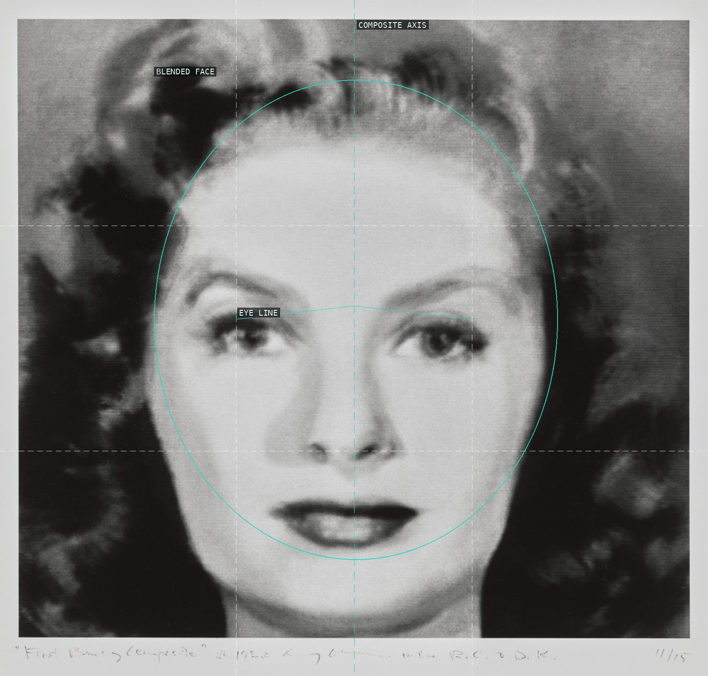
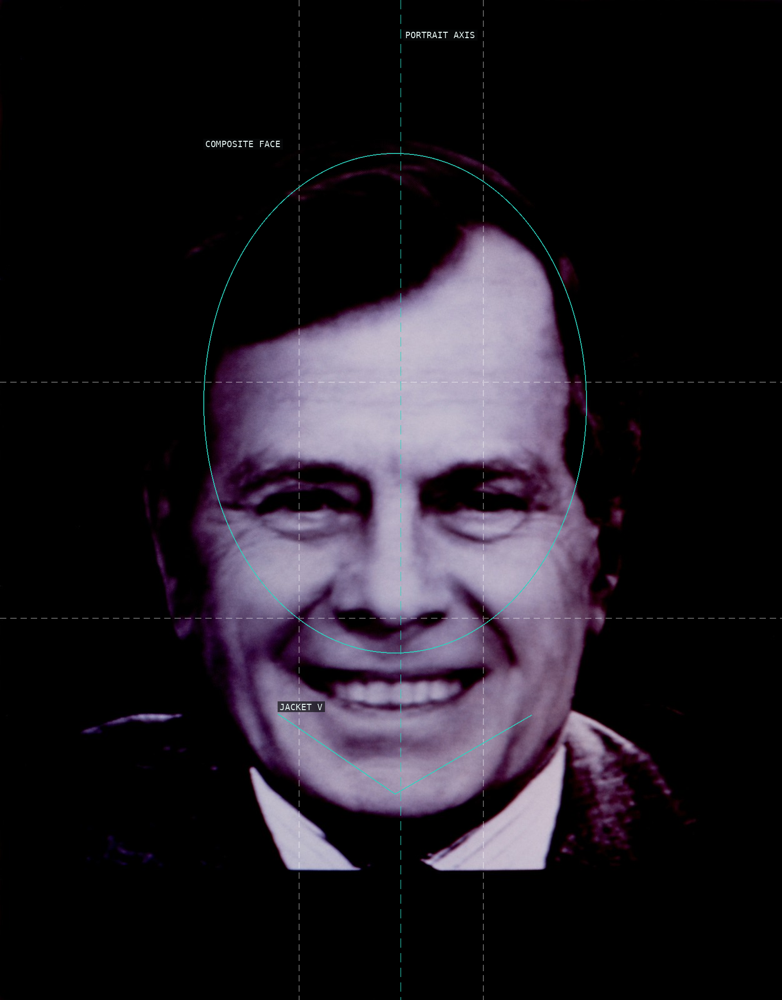
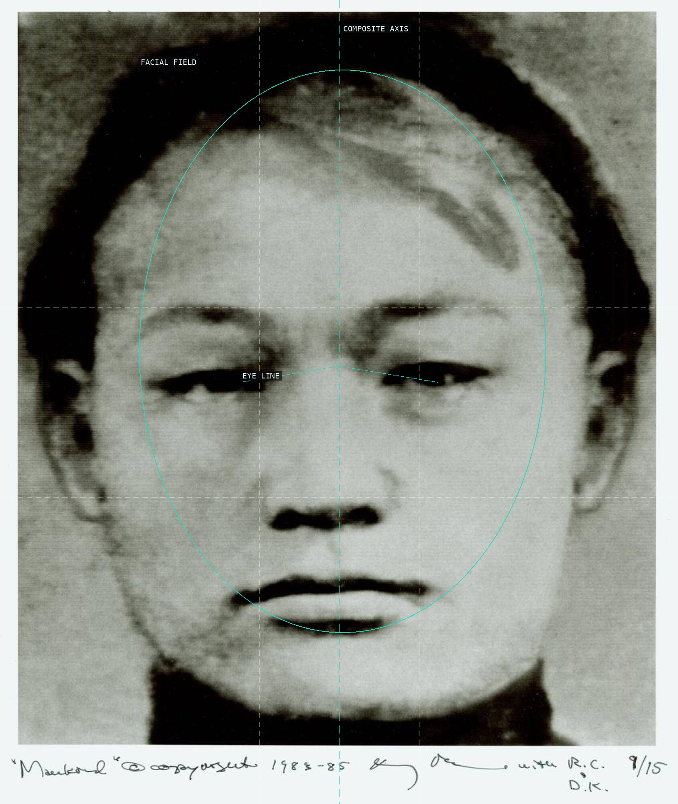
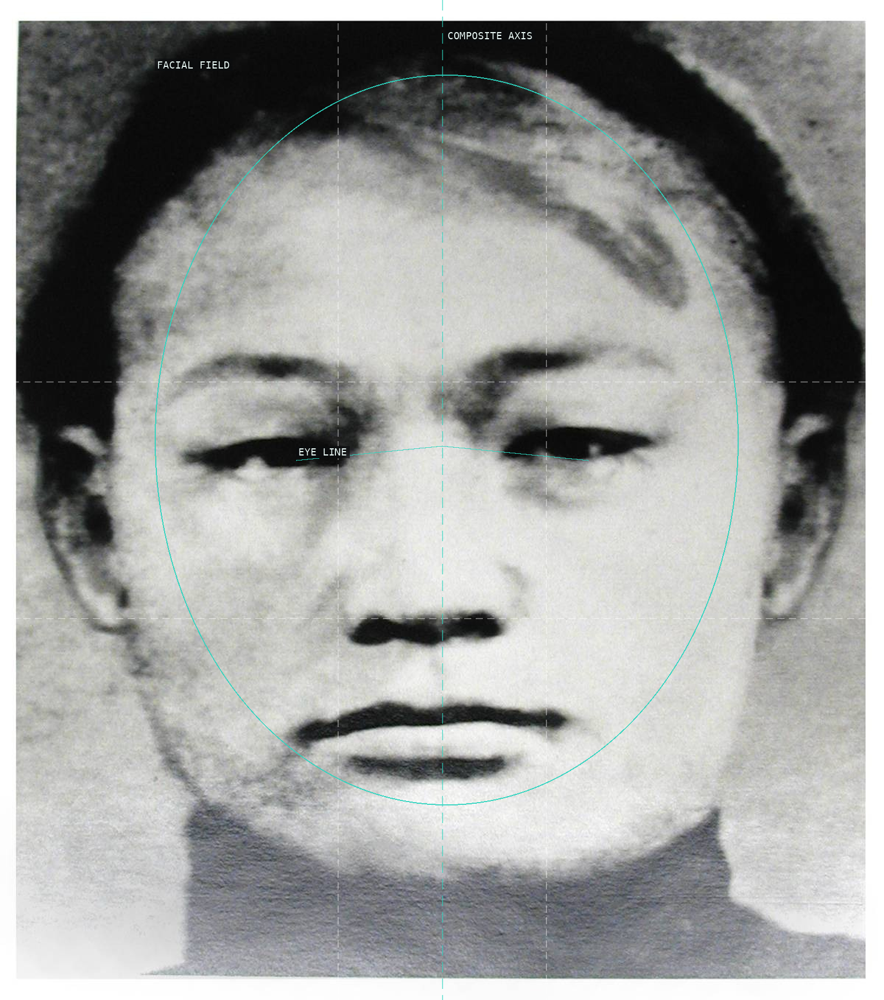
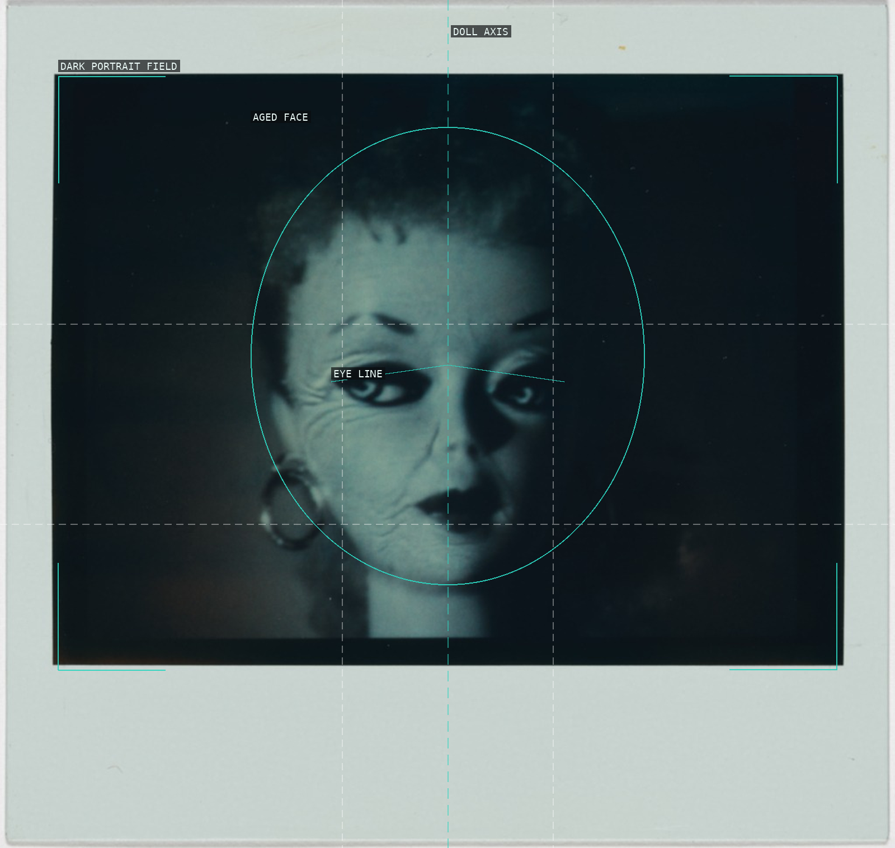

/* nancy-burson - proofs */
5 plates. Deterministic overlays rendered by the composition-analysis skill.

01-first-beauty-composite
A centered, nearly bilateral facial field makes the five-source blend read as one beauty ideal.

02-the-president-second-version
The high, centered head and enclosing jacket make a constructed political likeness feel formally official.

03-mankind
A frontal axis and broad facial field make the demographic composite appear neutral before its premise is read.

04-mankind-ii
The close rectangular crop gives the frontal face little lateral escape, making its grain and blend confrontational.

05-aged-barbie
A square, symmetrical doll portrait stages simulated aging against a dark inner field.